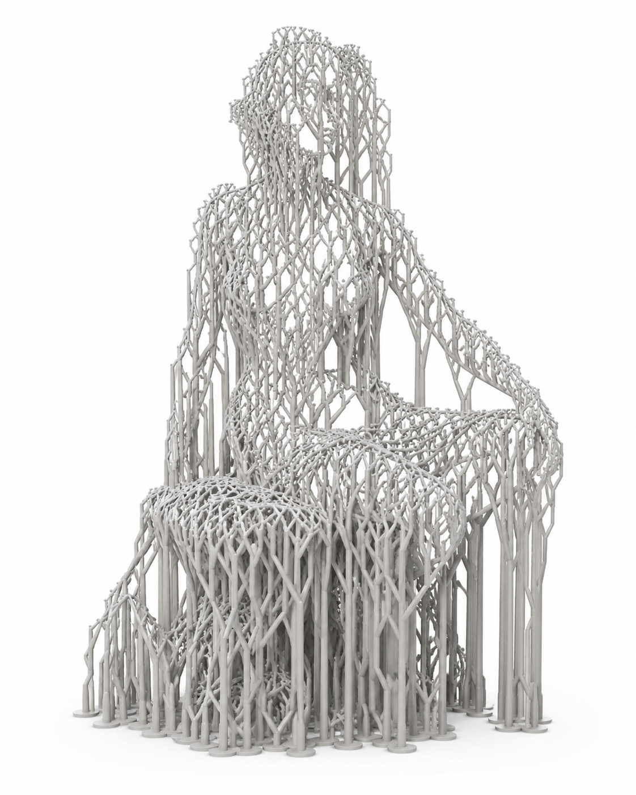

New technologies for image creation have always had an impact on visual aesthetics in some form; the medium leaks into the work. Historically, all visual technologies have inadvertently exposed their own aesthetics through technical limitations — before artists intentionally exploit them (Side note, I'm using em dashes again; I like them). Photography had lens flare, depth of field, film grain and chemical imperfections. Offset lithography had halftones and registration errors. CRT monitors had scanlines. Early CGI had Gouraud shading and low polygon counts. Vinyl has crackle. MP3s have compression artefacts. VHS has tracking noise. These were all limitations that later became visual languages.
For a while I’ve been accumulating the printed MidJourney magazines. Did you know they do a magazine? It’s a roundup of the most interesting images from the public creations on the platform, and a sparse spattering of interviews. Why subscribe? I like printed objects, but the more curious reason is that I wondered whether, at some point in time, I'd be able to lay them all out on the floor and spot the emergence of a distinctly AI-native aesthetic in the same way we can recognise the fingerprints of risograph printing, screen printing, early photography or low-poly CGI.
To date, I don’t see a distinctive aesthetic emerging from my bird's-eye view of the Midjourney magazine. The pages are full of sci-fi fantasy and highly polished, and often abstract photography, simulations of existing aesthetics rather than the birth of a new one.
For me, the most promising recognisable aesthetic was present in the earlier AI models. The ones that struggled with the number of fingers on a hand, text, the waxy skin and areas of great detail becoming garbled patterns. We perceived those as errors at the time, but now they feel closest to a unique visual style. Those wrinkles in the outputs are going away rapidly.
Maybe the finished picture is the wrong place to look? That got me thinking about something completely different, another newish technology. When you 3D print an object, the printer often creates delicate branching support structures that are snapped off and thrown away. They’re temporary artefacts of the manufacturing process. But what if you removed the object instead, leaving only the supports? You’d end up with a ghost object, defined entirely by its negative space. Those necessary parts of manufacturing have a beauty, an organic utility.

It made me wonder whether AI image creation's most interesting aesthetic isn’t in the finished image at all, but in the traces of the process that we usually discard. AI’s aesthetic might be with us right now, in the infrastructure. In architecture, we eventually became fascinated by scaffolding, construction lines and exposed services. In photography, we came to appreciate contact sheets. In printmaking we value registration marks and printer’s proofs. In filmmaking, storyboards and animatics have become aesthetic objects in their own right.
Perhaps AI’s equivalent isn’t the finished image at all. Perhaps its native visual language is in the computational artefacts, the attention fields, latent trajectories, probability landscapes, token geometries and denoising films. Images that were never intended for human eyes.
Interested in what that might look like? Take a look at this project from Nathan Lu — Aperture. It lets you scrub through the diffusion process and watch the model’s attention move across the image for every token in the prompt. The images are almost painterly soft clouds of probability that gradually become objects.